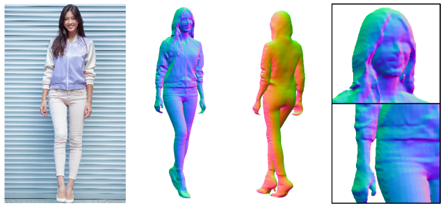
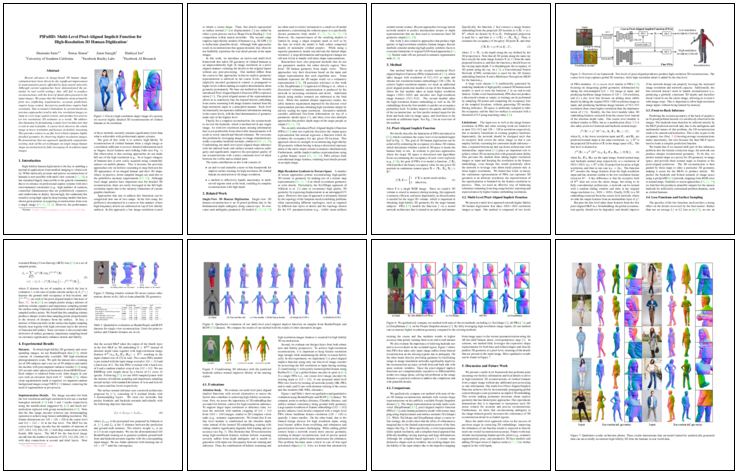

PIFuHD: Multi-Level Pixel-Aligned Implicit Function for High-Resolution 3D Human Digitization
University of Southern California1
Facebook Reality Labs2
Facebook AI Research3
|

|
We introduce a multi-level framework that infers 3D geometry of clothed humans at an unprecedentedly high 1k image resolution in a pixel-aligned manner, retaining the details in the original inputs without any post-processing.
|
Recent advances in image-based 3D human shape estimation have been driven by the significant improvement in representation power afforded by deep neural networks. Although current approaches have demonstrated the potential in real world settings, they still fail to produce reconstructions with the level of detail often present in the input images. We argue that this limitation stems primarily form two conflicting requirements; accurate predictions require large context, but precise predictions require high resolution. Due to memory limitations in current hardware, previous approaches tend to take low resolution images as input to cover large spatial context, and produce less precise (or low resolution) 3D estimates as a result. We address this limitation by formulating a multi-level architecture that is end-to-end trainable. A coarse level observes the whole image at lower resolution and focuses on holistic reasoning. This provides context to an fine level which estimates highly detailed geometry by observing higher-resolution images. We demonstrate that our approach significantly outperforms existing state-of-the-art techniques on single image human shape reconstruction by fully leveraging 1k-resolution input images.
Paper
|  |
S. Saito, T. Simon, J. Saragih, H. Joo.
PIFuHD: Multi-Level Pixel-Aligned Implicit Function for High-Resolution 3D Human Digitization
CVPR 2020 (Oral Presentation).
[pdf]
[Bibtex]
|
Results
Code